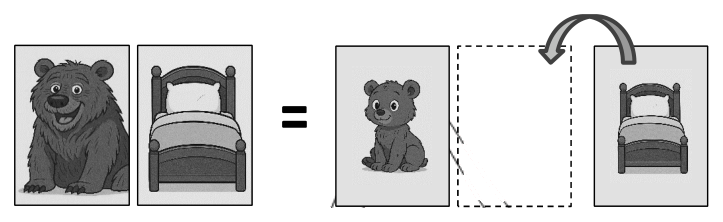

教師檢定幼兒園・學習者發展與適性輔導歷屆試題
開卷有益收錄教師檢定「幼兒園・學習者發展與適性輔導」民國 110–115 年的歷屆試題，共 6 份考卷、150 題，其中 150 題附有逐題詳解。每一份考卷都有獨立頁面，可以整卷看題目與答案，也可以直接線上作答。
線上練習 幼兒園・學習者發展與適性輔導 →
本科概況
| 科目 | 幼兒園・學習者發展與適性輔導（教師檢定） |
|---|
| 題數 | 150 題 |
|---|
| 考卷份數 | 6 份 |
|---|
| 涵蓋年份 | 民國 110–115 年 |
|---|
| 詳解 | 150 題（100%） |
|---|
| 資料來源 | 教育部教師資格考試歷屆試題（受託國立臺灣師範大學心理與教育測驗研究發展中心） |
|---|
| 費用 | 免費，不需註冊，無廣告 |
|---|
幼兒身心發展、學習與班級經營、輔導原理與適性教育。
歷年考卷（6 份）
點任一年度可看整份試題與標準答案。
題目長什麼樣
以下自本科題庫抽 5 題示例，完整題目請看上方各年度考卷。
第 1 題
小康一邊拼圖一邊低聲說:「先找同樣的顏色……這一片不對……再換一片。」老師走近時,小康仍持續喃喃自語的拼拼圖。根據維高斯基(L. Vygotsky)的觀點,下列老師的做法,何者較為適切?
- （A）小康尚未具備有效的問題解決能力,老師應立即提供口語引導
- （B）小康過度依賴外顯語言,老師應引導其逐步減少喃喃自語行為
- （C）小康可能因為喃喃自語而分散注意力,老師應提醒其專心拼圖
- （D）小康正在運用自我引導的語言策略,老師應暫時觀察而不介入
答案：（D）
詳解與考點
正解：小康一邊操作拼圖一邊喃喃自語，說出解題步驟（「先找同樣的顏色……這一片不對……再換一片」），這正是維高斯基所稱的私語（private speech）：幼兒藉由外顯的自言自語組織思考、自我調節並引導解決問題的歷程，是幼兒認知發展中正常且有益的現象，日後將逐漸內化為無聲的內在語言。教師見狀應暫時在旁觀察，不打斷幼兒正在進行中的自我引導歷程，故選（D）。
A：（A）主張老師應立即提供口語引導，誤把私語當作幼兒問題解決能力不足的表現。事實上私語正顯示小康正主動運用語言策略引導自己解題，貿然介入反而會打斷其自我調節的思考歷程。
B：（B）主張老師應引導小康逐步減少喃喃自語行為，誤認私語是應被消除的依賴行為。依維高斯基的觀點，私語是語言由外顯逐漸內化為內在思考工具的必經發展階段，並非需要矯正或減少的不良習慣。
C：（C）主張老師應提醒小康專心拼圖，誤判私語會分散幼兒注意力。實際上私語正是協助小康維持專注、組織解題步驟的策略，貿然提醒或打斷，反而可能干擾其正在進行的思考歷程。
本題考點：維高斯基（Vygotsky）的私語（private speech）理論。私語是幼兒將外在對話逐漸內化為內在思考語言的過程中的過渡現象，具有自我調節與引導問題解決的功能；教師面對幼兒私語時應予以尊重、在旁觀察而非隨意打斷或矯正。
第 6 題
老師在白板貼了以下圖卡: 老師說：「大熊旁邊是大床。」接著拿起小床的圖卡貼在小熊旁邊，並說：「小熊旁邊是小床。」此活動要培養幼兒哪一種能力？

- （A）類比推理(analogical reasoning)
- （B）基數法則 cardial principle)
- （C）認知拼圖(cognitive puzzle)
- （D）擴散思考(divergent thinking)
答案：（A）
詳解與考點
正解：老師先示範大熊旁邊是大床，再依循大配大的對應關係，將小床圖卡貼在小熊旁邊，說出小熊旁邊是小床，這是要求幼兒理解大熊配大床、小熊配小床中大配大、小配小的關係模式，並將此一關係類推應用到新的一組物件上，這正是類比推理（analogical reasoning）的定義：辨識兩組事物之間的關係模式，並將該關係類推至新的情境或物件，故選（A）。
B：基數法則（cardinal principle）是計數概念中的原則，指幼兒理解點數一組物件時，最後說出的數詞即代表該組物件的總數，這是與數量概念相關的計數能力，與本活動要求幼兒辨識並類推大小配對關係模式無關。
C：「認知拼圖」並非發展心理學或幼兒教育領域中定義明確、公認的能力名稱，此活動的重點也不在於訓練幼兒拼組空間片段或組合零散元素的能力，屬混淆概念所設計的虛構選項。
D：擴散思考（divergent thinking）指針對同一問題或情境，能產生多種不同的答案、想法或解法，強調思考的多樣性與開放性，然而本活動只存在單一正確的配對答案，並非要求幼兒產生多元答案的開放式思考活動。
本題考點：類比推理（analogical reasoning）的定義與辨識。類比推理指個體能辨識出兩組事物之間存在的關係模式，並將此一關係類推應用至結構相似的新情境或新物件，是幼兒認知發展中重要的推理能力之一；作答時須與計數相關的基數法則、強調多元開放答案的擴散思考等其他認知能力概念加以區辨。
第 11 題
下列老師的引導用語,何者較有助於創造互助合作的班級氛圍?
- （A）用餐時間,老師說:「我來看看你們誰可以第一個吃完。」
- （B）戶外運動時間,老師說:「你們跑得最快的人可以得到禮物。」
- （C）學習區時間,老師說:「你們這組可以把積木堆得比昨天高嗎?」
- （D）集合時間,老師說:「你們誰鞋子穿得最快,就可以排第一個。」
答案：（C）
詳解與考點
正解：選項（C）「你們這組可以把積木堆得比昨天高嗎？」以小組為單位、並以「與自己過去表現比較」（比昨天）作為努力目標，鼓勵同組幼兒共同合作以達成進步，過程中幼兒彼此協力而非互相較勁，最有助於營造互助合作的班級氛圍，故選（C）。
A、B、D：（A）「誰可以第一個吃完」、（B）「跑得最快的人可以得到禮物」、（D）「誰鞋子穿得最快，就可以排第一個」三者引導邏輯相同，皆是以「個人」的速度或完成順序分出高下，並搭配名次、獎勵或排隊優先權作為誘因，使幼兒彼此競速搶快、視同儕為競爭對手；差別僅在誘因形式——A是「第一名」的名義、B是實質獎品、D是排隊優先權，但三者本質皆強化個人間的競爭關係，與合作氛圍的營造方向相反。
本題考點：班級經營中競爭導向與合作導向引導語的辨析。合作導向的引導語通常具備兩項特徵：以小組（而非個人）為單位、以自我或團隊的進步（而非贏過他人）為目標；教師的用語選擇直接形塑幼兒之間是競爭關係還是合作關係。
第 16 題
老師與小慧正在進行圖卡遊戲。老師以圖卡呈現題目:「菱形◆:風箏=圓形●:?」 請小慧在三張圖卡中選出正確的圖卡。三張圖卡分別為香蕉、吐司、太陽餅。小慧 選了吐司的圖卡。但老師接著說:「這是菱形,這是風箏,這兩個有什麼關係?」 於是小慧改選了太陽餅的圖卡。下列敘述何者正確?
- （A）小慧具備垂直遷移的能力
- （B）老師的引導策略稱為「反證」法
- （C）經由老師的引導,小慧學習了類比推理
- （D）小慧選擇吐司的圖卡是認知調適的表現
答案：（C）
詳解與考點
正解：老師以「菱形◆:風箏=圓形●:?」呈現一道類比推理題，要求小慧依「菱形與風箏之間的關係」找出「圓形與何者具有相同關係」的答案。小慧最初選擇吐司，顯示她尚未掌握菱形與風箏之間「外形相同」這項對應關係；老師具體點出「這是菱形，這是風箏，這兩個有什麼關係？」，引導小慧聚焦「形狀」這項關鍵屬性後，小慧才改選外形同為圓形的太陽餅。這個歷程正是小慧在老師引導下，理解並運用「找出兩配對間共同屬性、再類推至第二組配對」的類比推理歷程，故選（C）。
A：（A）垂直遷移指運用先前學會的較低層次技能或知識，去學習或掌握更高層次、更複雜的新技能，強調的是不同層次能力間的遷移；本題是小慧在單一類比任務中，經引導修正判斷依據，屬同一層次任務內的推理歷程，並非垂直遷移。
B：（B）「反證」法是透過提出相反的例證或反例來否定既有主張；老師的作法只是具體說明菱形與風箏之間的關係（形狀相同），是正面的提示與引導，並未提出任何反例來否定小慧原先的選擇，稱不上反證法。
D：（D）認知調適（accommodation）指個體修正既有的認知基模，以符合新經驗或新訊息；小慧一開始選擇吐司，是她尚未掌握「形狀」這項對應關係前的錯誤嘗試，屬於推理錯誤而非既有基模的修正調適。
本題考點：類比推理（analogical reasoning）與皮亞傑認知發展中的同化（assimilation）／調適（accommodation）概念辨析。類比推理指找出兩組配對間的共同關係屬性並加以類推；作答時須先確認題幹操作的是何種認知歷程（推理任務、遷移、還是基模修正），再對應至正確的心理學術語。
第 21 題
有關性別發展的敘述，下列何者正確？
- （A）六歲的小希是女生，她知道自己20歲時還是女生，因為小希已有性別認定的概念
- （B）四歲的小毛是男生，但小毛喜歡在扮演區中扮演公主，要特別擔心小毛會有同性戀的性傾向
- （C）六歲的女生小望喜歡玩洋娃娃，六歲的男生小可喜歡玩小汽車、機器人，這是因為性別區隔所造成的
- （D）三歲的小豆知道叔叔是男生，但後來叔叔穿裙子、留長髮，小豆就叫他阿姨，表示小豆還沒有性別恆定的概念
答案：（D）
詳解與考點
正解：三歲的小豆原先知道叔叔是男生，但當叔叔改變外在裝扮（穿裙子、留長髮）後，小豆便依外表改稱他「阿姨」，顯示小豆仍以表面、可隨意改變的外在特徵（服裝、髮型）作為判斷性別的依據，尚未理解性別不會因外在裝扮改變而改變；此正是性別恆定概念尚未建立的表現，性別恆定通常要到六、七歲才逐漸穩固，故選（D）。
A：六歲的小希知道自己20歲時仍是女生，這其實屬於性別穩定性（理解性別不會隨時間、年齡增長而改變）的表現，而非性別認定（僅指知道自己目前所屬的性別為何）；此選項把性別穩定性誤稱為性別認定，混淆了兩個不同層次的概念，故不正確。
B：四歲的小毛喜歡在扮演區中扮演公主，此屬幼兒角色扮演遊戲中對多元角色的常態探索，是學前階段常見的遊戲行為，與未來性傾向並無必然關聯，不應過度擔憂或貼上標籤，故此敘述不正確。
C：六歲的小望喜歡玩洋娃娃、小可喜歡玩小汽車與機器人，此為性別基模發展下對符合性別刻板印象玩具的偏好展現；而性別區隔通常指幼兒傾向與同性別同伴一起遊玩、互動的社交分群現象，並非指玩具偏好本身，此選項誤用性別區隔一詞來解釋玩具偏好的成因，故不正確。
本題考點：性別發展歷程中的核心概念——性別認定（知道自己目前的性別）、性別穩定性（理解性別不隨時間改變）、性別恆定（理解性別不隨外在裝扮或活動改變）三階段的區辨，以及性別基模、性別區隔等相關概念的正確界定與應用。
教師檢定其他科目
題目與標準答案出自教育部教師資格考試歷屆試題（受託國立臺灣師範大學心理與教育測驗研究發展中心），依《著作權法》第 9 條為非著作權標的，得自由利用；
本專案撰寫的詳解以 CC0 1.0 貢獻至公眾領域。詳解為 AI 整理的學習輔助，並非官方標準答案。